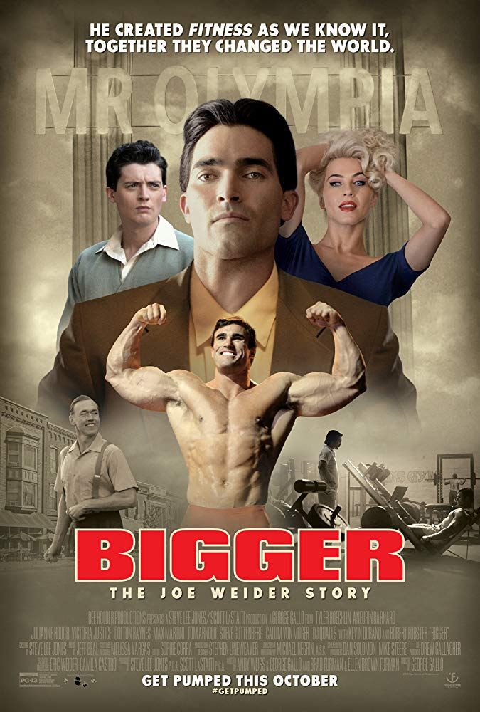
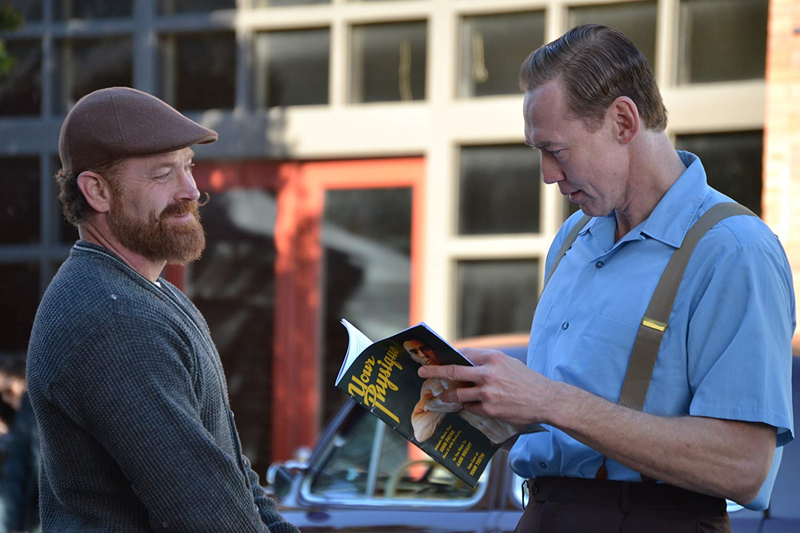
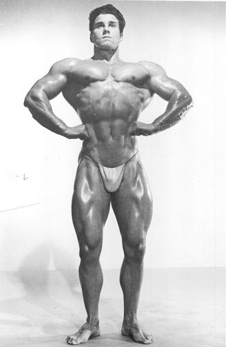
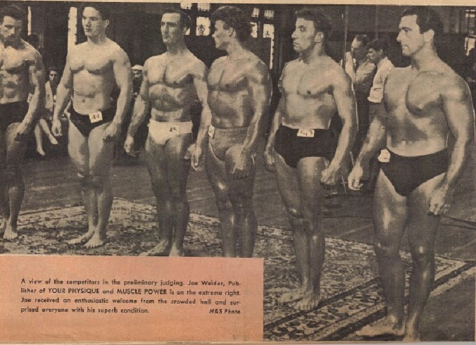
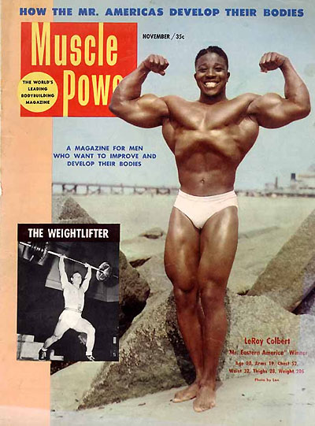
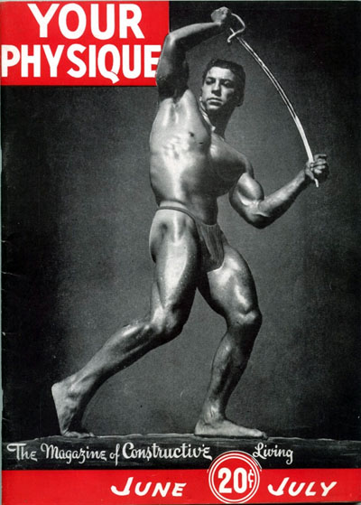
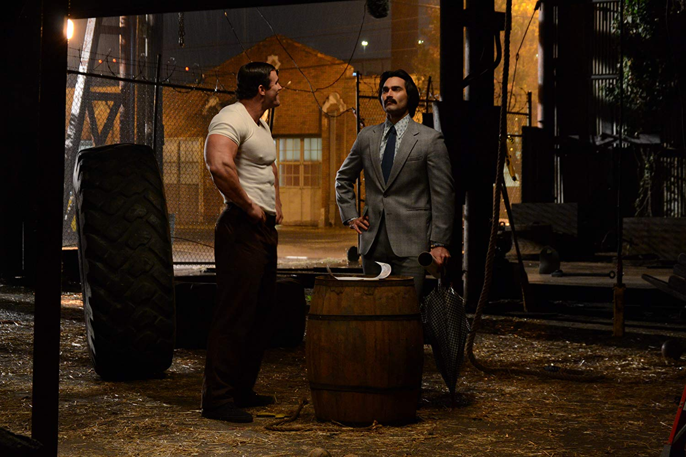
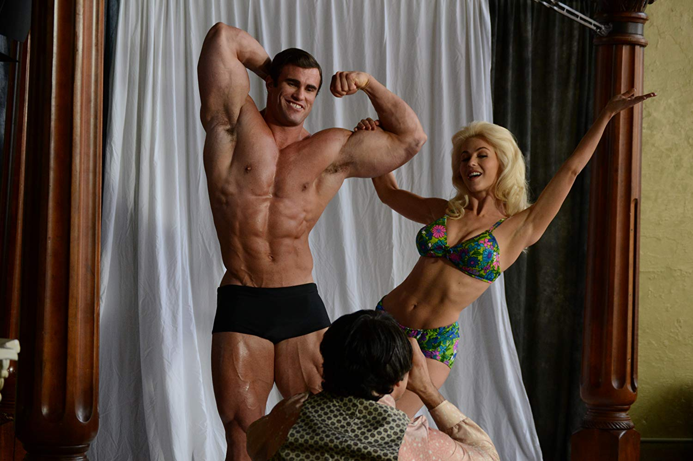

Bigger the movie attempts to tell the life stories of the founding fathers of bodybuilding, Joe Weider (played by Tyler Hoechlin) and Ben Weider (played by Aneurin Barnard), and the obstacles they encountered in forming their bodybuilding empire. Released October 12, 2018 in limited theatres throughout the United States, it grossed only $46,382, which at an average ticket cost of $9.11 results in a little over 5,000 people who saw this movie in theatres. Unfortunately, I was one of them. In addition to being riddled with historical inaccuracies, many of the actors were poor representations of the legends they played. In this article I will not review it as a movie critic, as they have already crucified the movie, but as a bodybuilding enthusiast and historian.

To understand the history behind the movie completely the audience must know that the character of Bill Hauk (played by Kevin Durand) was actually Bob Hoffman, the founder of York Barbell and Strength & Health magazine. Hoffman had a stranglehold on the bodybuilding and weightlifting industries starting in the early 1930s and was the primary source of competition to the Weiders when they entered the bodybuilding industry in the early 1940s. This insight is key to understanding the difference between the story that was told, and what actually happened.
Much of the premise of the movie centers around Joe Weider and Bob Hoffman and the bodybuilders they trained. In the movie both men used various methods of training bodybuilders to see who could create the perfect physique. The bodybuilders would then compete against each other in bodybuilding contests to determine who was the best. Weider and Hoffman would use the success of these bodybuilders to sell their muscle magazines, weight sets, and later supplements. Although this made for an interesting plot, Weider and Hoffman never trained bodybuilders directly. In truth, bodybuilders frequently claimed they were trained by Weider and Hoffman in muscle magazines only because they were receiving compensation from Weider and Hoffman to do so. Unfortunately, bodybuilding history continued to be misconstrued throughout the entire movie from this point on.

As it is portrayed, Joe Weider first meets Bob Hoffman at the 1951 AAU (Amateur Athletic Union) Mr. Universe contest. Hoffman tries to get the AAU to disqualify Weider and his competitors from the contest for not being amateurs since Weider paid many of them to appear in his muscle magazines. When the AAU official confronts Weider about this, on the spot, Weider invents the IFBB (International Federation of Body Builders) and tells the AAU official if his bodybuilders are disqualified, they will only compete in IFBB events from then on. The AAU official relents and lets them compete and Reg Park, who in the movie is a Weider trained bodybuilder, wins the Mr. Universe title over Hoffman’s competitors. This was an interesting story, but what actually occurred at the 1951 Mr. Universe contest was more interesting.

The 1951 Mr. Universe contest was actually sponsored by NABBA (National Amateur Body Builders Association) in England, not the AAU in America. Bob Hoffman was not at the event, but did control the AAU and its Mr. America contest which had effectively barred the Weiders from participating in their events by 1947/1948. I believe this was what was trying to be conveyed in the scene mentioned above. The IFBB was created several years earlier (1946-1947) and Joe Weider would not have been watching the contest backstage because he was competing in it, and took fifth place in the tall class! He chose to compete because Hoffman had constantly been ridiculing him in Strength & Health magazine and Weider wanted to prove he practiced what he preached. If that isn’t a better storyline, I’m not sure what is.

The most egregious skewing of history occurs when Joe Weider is credited as the first publisher to put a black bodybuilder on the cover of a muscle magazine. The Leroy Colbert Muscle Power issue shown in the movie was from November, 1953. Peary Rader (Ironman magazine) and Bob Hoffman (Strength & Health magazine) had black bodybuilders on the covers of their magazines as early as 1940/1941. This information would obviously not have worked for the Bigger storyline as Hoffman is painted as a racist and anti-Semite throughout the movie.
There have been several questions regarding Bob Hoffman’s notions on minorities and Jews but it cannot be understated that Hoffman, through his control of the AAU, was allowing minorities to compete in bodybuilding and weightlifting events when most sporting organizations were not allowing minorities to compete at all. Joe Weider and Hoffman frequently lobbed allegations at each other through the years and some may have unfairly stuck in peoples’ minds. The fact is Hoffman was ahead of his time in race relations and these labels attached to him were to create publicity and a more controversial story to sell for the Weiders, much like was done in the movie.

During the early years portrayed in the movie, I was curious why Dan Lurie was never mentioned or seen. Lurie was an early business partner of the Weiders and was their foray into the United States. The Weiders started in Montreal, Canada and needed someone to distribute their barbells and dumbbells in America as the customs were too high to send them across the border. Once the Weiders received orders from their mail order ads in America, they would notify Lurie who would have the weights made and shipped from the foundry in America. Lurie was also the contest promoter of the group as the Weiders initially only believed in selling bodybuilding products and not promoting contests. Lurie was the first to promote a contest under the IFBB designation and some credit him as being the creator of the organization. The Weiders would eventually cut Lurie out of the equation in 1948. This story should have been included as Lurie was an integral part to the Weider’s early success and the IFBB’s creation.

Later in the movie, Joe Weider hears of Arnold Schwarzenegger and makes a trip to Austria in 1966 to meet him and train him although a meeting between the two did not occur until Arnold arrived in Miami in 1968. It is mentioned that Bob Hoffman passed on Arnold even though he put him on the cover of one of his magazines (Muscular Development) almost a full year before the Weiders put him on the cover of one of theirs (Muscle Builder). It has even been mentioned that Arnold was negotiating a contract with Hoffman to get the Weiders to up their offer for him to come to America around this time. The bodybuilding history in the movie culminates with the 1970 Mr. Olympia contest in which Sergio Oliva, trained by Bob Hoffman, competes against Arnold Schwarzenegger, trained by Joe Weider. Although what occurred between Arnold and Oliva was shown accurately, we know that neither Oliva nor Schwarzenegger were trained by either Hoffman or Weider. It is also difficult to imagine Hoffman getting anywhere near a Mr. Olympia contest as this was an IFBB event run by the Weiders.
Apart from the propagandistic version of bodybuilding history, the movie had particularly bad acting in my opinion. Tyler Hoechlin’s version of Joe Weider reminded me of Dustin Hoffman’s portrayal of Rain Man if he also had OCD about perfecting the human body. As mentioned earlier, Kevin Durand’s version of Bob Hoffman should be offensive to anyone who knew Hoffman or spent any time researching him. Hoffman was no angel, but was not a raving racist anti-Semitic lunatic who practically foamed at the mouth during his rants and got physically violent with anyone who got in his way as portrayed in the movie.

There were however some pleasant surprises, as Julianne Hough played Betty Weider wonderfully, showing the warmth and kindness it must have taken to support Joe Weider in his early years of forming a bodybuilding empire. Calum Von Moger was a pleasant surprise also, as he did a good job playing Arnold Schwarzenegger and did a great job with his accent. No one can play Arnold but Arnold so this was no easy task.
Although I had high hopes for this movie, it ultimately left me, and the bodybuilding community disappointed. There is a saying that truth is stranger than fiction, and in bodybuilding’s case it is also more interesting. The writers didn’t need to embellish bodybuilding history to sell this. I can only surmise that since the heirs of the Weiders had direct involvement with it (Eric Weider is listed as an executive producer) they tried to paint them in the kindest light possible by omitting things like how ruthless they could be. Ruthlessness was necessary to get to the top of bodybuilding and dethrone Bob Hoffman who had a stranglehold on it for close to 40 years. That is the story that should have been told.